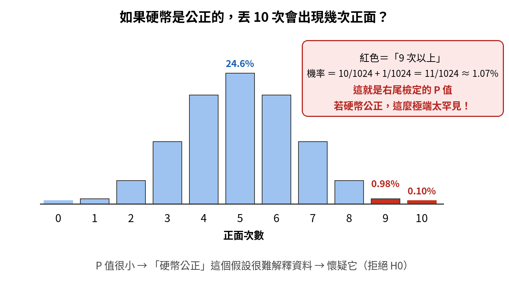
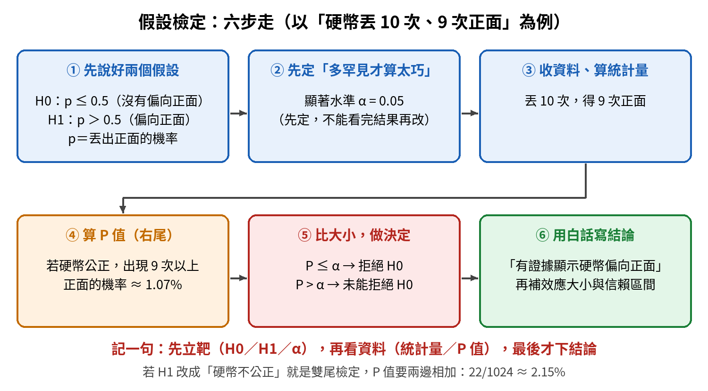
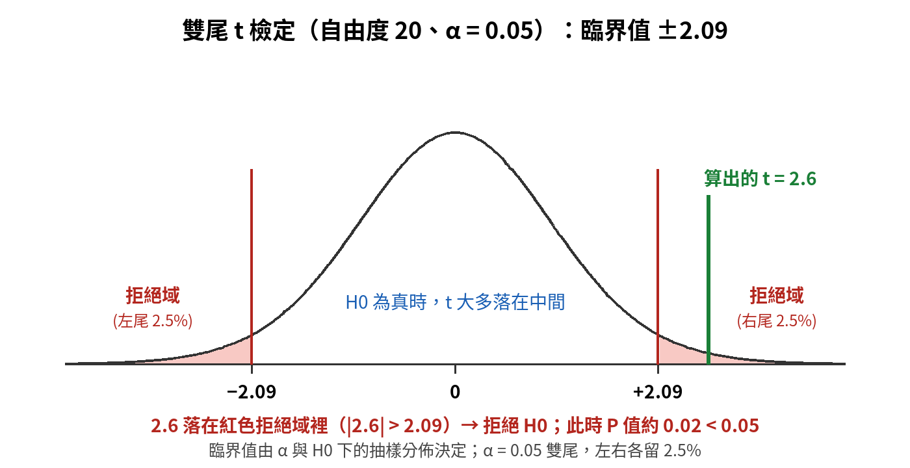
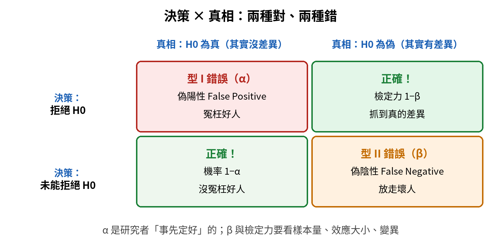
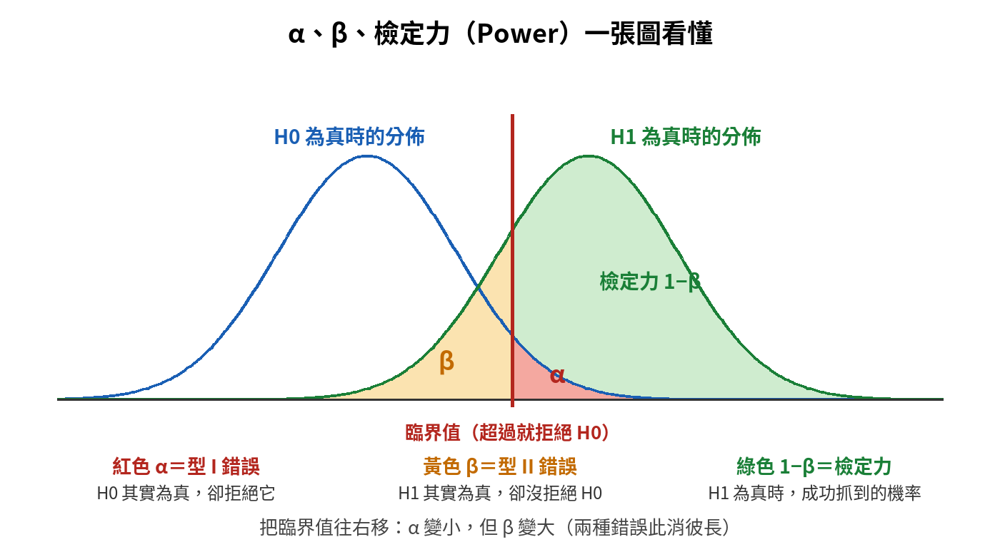
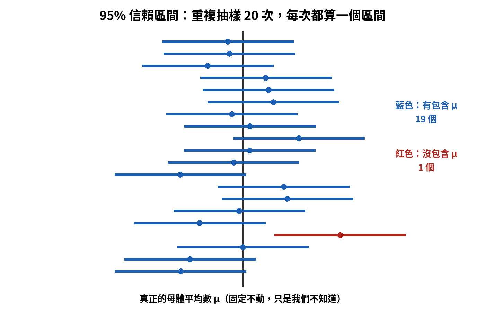
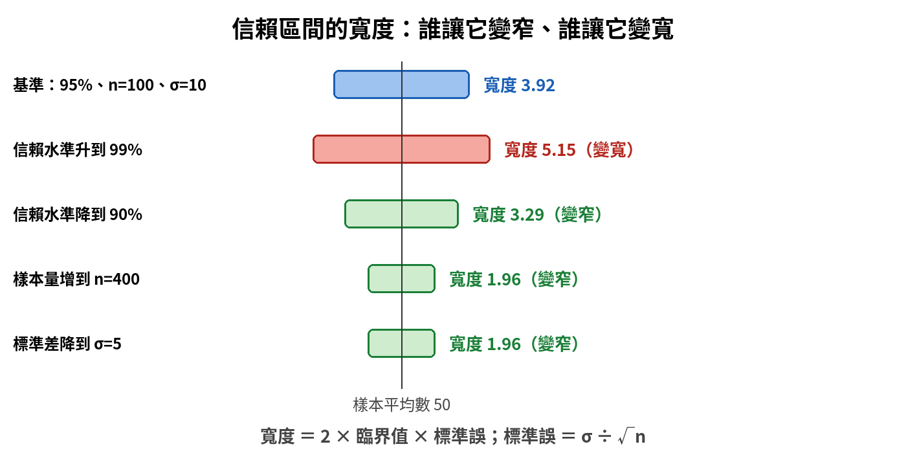
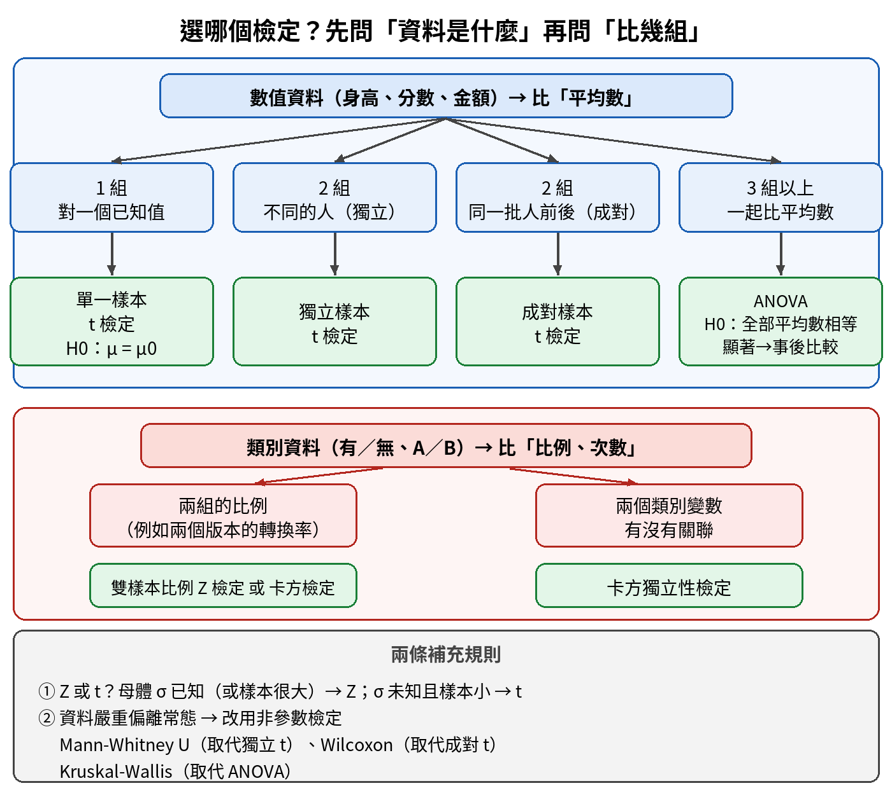

假設檢定與統計推論｜觀念圖解複習
從「為什麼需要假設檢定」講起，一路走到信賴區間與選檢定方法。每個單元都照「為什麼需要它 → 一步步搭起來 → 對照表 → 易錯提醒」整理。先看圖，再讀文字。
從零講起假設檢定到底在做什麼？
為什麼需要這個概念？ 我們永遠只看得到「樣本」，卻想對「母體」下結論。樣本有運氣成分：同一個真相，抽兩次樣本，數字也會不一樣。公司把網頁改版，新版轉換率 6.2%，舊版 5.8%，新版真的比較好，還是這次剛好運氣好？假設檢定就是一套規則，用來判斷「看到的差異是真的，還是運氣造成的」。
最簡單的例子：丟硬幣
有人說他的硬幣是公正的。丟 10 次，得到 9 次正面，直覺會懷疑。但「多懷疑才算夠」？假設檢定給了一個量化的做法：
- 先假設硬幣是公正的（沒有偏向正面），這個保守的說法叫虛無假設 H0。
- 如果真的公正，丟 10 次出現「9 次以上正面」的機率有多大？算出來是 11/1024，約 1.07%。這個機率就叫 P 值（這裡的對立假設是「硬幣偏向正面」，屬於右尾單尾檢定）。
- 1.07% 太罕見了，比事先設定的門檻 5% 還小，所以判斷「公正」這個假設很難解釋資料，拒絕它。

補充：上面的對立假設是「硬幣偏向正面」，所以只算「正面特別多」這一邊（右尾單尾），P 值 11/1024 ≈ 1.07%。如果對立假設改成「硬幣不公正」（雙尾），正面特別多或特別少都算，要把兩邊加起來：9 次以上加 1 次以下，22/1024，P 值約 2.15%，一樣小於 5%，結論不變。H1 決定單尾或雙尾，P 值要跟著走。
全流程：六步走

這張圖是整章的主線。後面所有名詞（H0、α、P 值、臨界值、型 I 錯誤、信賴區間）都出現在這六步的某一步裡。看不懂某個詞時，先找它在第幾步。
用「法庭」記住邏輯
| 法庭 | 假設檢定 | 怎麼記 |
|---|---|---|
| 被告先推定無罪 | 先假設 H0 為真（沒有差異、沒有效果） | H0 是「現狀」或「沒事」 |
| 檢方要拿出證據證明有罪 | 研究者想證明 H1（有差異、有效果） | H1 是想找的東西 |
| 證據強到超出合理懷疑 | P 值很小（P ≤ α）→ 拒絕 H0 | 資料跟 H0 太矛盾 |
| 證據不足 → 判無罪（不是證明清白） | P 值不夠小 → 未能拒絕 H0（不是證明 H0 為真） | 「沒證據」不等於「沒有」 |
| 冤枉好人 | 型 I 錯誤（機率 α） | H0 為真卻拒絕它 |
| 放走壞人 | 型 II 錯誤（機率 β） | H0 為偽卻沒拒絕它 |
這也是為什麼假設檢定被說成反證法：先假設 H0 為真，如果資料跟它太矛盾，就推翻它。它不是直接證明 H1 對，而是證明 H0 站不住腳。
詞彙對照表（先掃一遍，後面逐個講）
| 名詞 | 一句白話 | 出現在第幾步 |
|---|---|---|
| H0 虛無假設 | 「沒有差異、沒有效果」，永遠包含等號 | ① |
| H1 對立假設 | 「有差異、有效果」，跟 H0 互斥 | ① |
| α 顯著水準 | 事先定的容忍度：H0 為真時，最多容許誤判的機率（常用 0.05） | ② |
| 檢定統計量 | 把樣本資料濃縮成一個數字（例如 t 值、Z 值） | ③ |
| P 值 | 在 H0 成立的前提下，看到這樣或更極端資料的機率 | ④ |
| 臨界值、拒絕域 | 統計量超過這條線就拒絕 H0，由 α 決定 | ④⑤ |
| 型 I 錯誤（α） | H0 為真卻拒絕（偽陽性） | 結論可能出錯 |
| 型 II 錯誤（β） | H0 為偽卻沒拒絕（偽陰性） | 結論可能出錯 |
| 檢定力 1 − β | H1 為真時，成功抓到差異的機率 | 設計實驗時 |
| 信賴區間 | 對母體參數的一個範圍估計 | ⑥ |
| 標準誤 SE | 樣本平均數本身的「晃動程度」＝ σ ÷ √n；σ 未知時用 s ÷ √n，臨界值改查 t 表 | 信賴區間、統計量都會用 |
| 效應大小 | 差異有多大（不是顯不顯著，是「大不大」） | ⑥ |
單元 ①假設怎麼寫：H0、H1 與單尾、雙尾
為什麼需要這個概念？ 六步走的第一步就是寫假設。第一步寫錯，後面算得再漂亮也是白做。而且「H0 長什麼樣、H1 長什麼樣」是最基本也最常被混淆的地方。
一步步搭起來
- H0 一定包含等號（＝、≤、≥）；H1 一定不含等號（≠、＞、＜）。
- H0 和 H1 互斥又窮盡：兩者不會同時為真，合起來涵蓋所有可能。
- 假設永遠寫「母體參數」（μ、p、σ²），不寫樣本統計量（x̄、p̂）。我們是用樣本推測母體，樣本的數字早就算得出來，不需要猜。
- 再看想問的方向：問「有沒有不同」就兩邊都看（雙尾）；問「有沒有比較大」或「有沒有比較小」只看一邊（單尾）。
| 想問的問題 | H0 | H1 | 類型 |
|---|---|---|---|
| 新版轉換率跟舊版有沒有不同？ | p1 ＝ p2 | p1 ≠ p2 | 雙尾（兩邊都算） |
| 新版轉換率有沒有比較高？ | p1 ≤ p2 | p1 ＞ p2 | 右尾單尾 |
| 新藥有沒有降低血壓？ | μ ≥ μ0 | μ ＜ μ0 | 左尾單尾 |
轉換率、良率、點擊率這類「有或沒有」的比例，參數用 p；身高、金額、血壓這類數值的平均，參數用 μ。
單元 ②P 值、α 與臨界值：怎麼做決定
為什麼需要這個概念？ 這是六步走的第 ④⑤ 步，也是檢定的核心：把整份資料濃縮成一個判斷，「拒絕」或「不拒絕」H0。P 值是全章最容易被誤解的名詞，要一次搞清楚。
一步步搭起來
- P 值的定義：先站在 H0 成立的立場，算「看到這樣或更極端的資料」的機率。硬幣例子裡的 1.07% 就是右尾檢定的 P 值；若 H1 是「不公正」（雙尾），P 值約 2.15%。
- α 是事先定好的門檻，常用 0.05，意思是「就算 H0 是真的，也容許最多 5% 的機會誤判」，也就是型 I 錯誤的上限。看完資料才改 α 等於作弊，所以一定要先定。
- 比大小：P ≤ α 拒絕 H0；P ＞ α 未能拒絕 H0。
- 另一條等價的路：臨界值法。不比 P 值，改比「統計量」和「臨界值」。臨界值由 α 和「H0 為真時統計量的分佈」決定。α＝0.05 的雙尾檢定，左右兩端各留 2.5% 當拒絕域。統計量掉進拒絕域就拒絕 H0。兩條路的結論一定相同。

決策規則對照表
| 比較 | 決策 | 白話結論 |
|---|---|---|
| P ≤ α（例如 0.03 ≤ 0.05） | 拒絕 H0 | 有足夠證據顯示有差異（結果「顯著」） |
| P ＞ α（例如 0.12 ＞ 0.05） | 未能拒絕 H0 | 沒有足夠證據顯示有差異（不是證明沒有差異） |
| P ＜ 0.001 | 拒絕 H0（證據很強） | 資料與 H0 非常不一致 |
| 雙尾：|統計量| ≥ 臨界值 右尾：統計量 ≥ 臨界值 左尾：統計量 ≤ −臨界值 | 拒絕 H0 | 統計量掉進拒絕域；三種寫法都等同 P ≤ α |
常用 Z 臨界值（要背）
| 檢定方向 | α＝0.10 | α＝0.05 | α＝0.01 |
|---|---|---|---|
| 雙尾（左右各留 α/2） | ±1.645 | ±1.96 | ±2.576 |
| 右尾單尾（整個 α 放右邊） | 1.282 | 1.645 | 2.326 |
| 左尾單尾（整個 α 放左邊） | −1.282 | −1.645 | −2.326 |
記法：單尾 α＝0.05 的 1.645，剛好就是雙尾 α＝0.10 的臨界值，因為兩者都是「右邊留 5%」。這些是 Z（標準常態）的數字；用 t 檢定時要依自由度查 t 表，數字會比 Z 大一點，例如上圖自由度 20、雙尾 α＝0.05 的臨界值是 ±2.086。
P 值的四個常見誤解
| 誤解 | 為什麼錯 |
|---|---|
| P 值＝H0 為真的機率 | P 值是先假設 H0 為真，再算看到這樣或更極端資料的機率；它不是在算 H0 本身成立的機率 |
| P 值＝H1 為真的機率 | 同上，P 值不提供任何假設「為真的機率」 |
| P 值＝犯型 I 錯誤的機率 | α 才是事先定的型 I 錯誤上限；P 值是從資料算出來的 |
| P 值越小，效果越大 | P 值小只代表證據強，不代表效果大；大小要看效應大小 |
單元 ③兩種錯誤與檢定力
為什麼需要這個概念？ 檢定是用樣本做決定，所以一定可能出錯。統計學不假裝自己不會錯，而是先講清楚會錯在哪兩個方向、機率多大，以及怎麼降低。
一步步搭起來
- 真相有兩種：H0 真的成立（沒差異），或 H0 不成立（真的有差異）。
- 決策也有兩種：拒絕 H0，或未能拒絕 H0。
- 2 × 2 交叉出四種結果：兩格判對、兩格判錯。

| 名詞 | 定義 | 生活比喻 | 記法 |
|---|---|---|---|
| 型 I 錯誤 | H0 其實為真，卻拒絕了 H0 | 冤枉好人、偽陽性 | 機率＝α |
| 型 II 錯誤 | H0 其實為偽，卻未能拒絕 H0 | 放走壞人、偽陰性 | 機率＝β |
| 檢定力 Power | 真的有差異時，成功拒絕 H0 | 抓到壞人 | ＝1 − β（檢定力 0.8 ⇔ β＝0.2） |
| 正確不拒絕 | H0 為真時，沒有拒絕 H0 | 沒冤枉好人 | ＝1 − α |
α 和 β 的蹺蹺板

- α 與 β 此消彼長：臨界值往右移，α（紅）變小，β（黃）就變大。在樣本數、變異、效應都固定時，兩者此消彼長；想同時降低兩種錯誤，最主要靠增加樣本量，降低量測變異、改用成對設計也有幫助。
- 藍色（H0）與綠色（H1）兩個分佈離得越遠（真正的差異越大），越容易分辨，β 越小。
- 檢定力低，例如只有 0.3，代表真的有差異時只有 30% 抓得到，β 高達 0.7，「錯過真實效果」的風險很高。
怎麼提高檢定力？
| 做法 | 檢定力 | 代價或說明 |
|---|---|---|
| 增加樣本量 n | ↑ | 最可靠，兩種錯誤可以同時變小 |
| 提高 α（例如 0.01 → 0.05） | ↑ | 型 I 錯誤機率也跟著變大，是用誤判換來的 |
| 減小資料變異（σ 更小） | ↑ | 例如換更精準的量測工具 |
| 真正的效應更大 | ↑ | 差異越大越容易偵測到 |
| 換更複雜的統計模型 | 不保證提高 | 複雜不等於有力；但選對更有效率的設計（成對設計、控制共變數）可以提高 |
效應大小和樣本量的關係：差異越小，需要的樣本越多。粗略地說，想偵測的差異縮小一半，樣本量要變成約 4 倍（樣本量大約跟差異的平方成反比）。轉換率提升 0.1% 比提升 5% 小得多，要看得出來，需要大得多的樣本。
單元 ④信賴區間：不只問「有沒有」，還問「差多少」
為什麼需要這個概念？ 假設檢定只回答「有沒有差異」，是一個「是或否」。信賴區間進一步回答「大概差多少」，給出母體參數一個合理的範圍，資訊更完整。
一步步搭起來
- 點估計：用一個數字猜母體參數，例如樣本平均 50。簡單，但不知道有多準。
- 區間估計：給一個範圍，並附上信心水準，例如「95% 信賴區間 [48, 52]」。
- 公式：點估計 ± 臨界值 × 標準誤。標準誤＝σ ÷ √n，意思是「樣本平均數本身會晃動多大」，只受標準差和樣本數影響。σ 未知時改用樣本標準差 s，標準誤＝s ÷ √n，臨界值改查 t 表。
- 95% 是什麼意思？母體平均數 μ 是一個固定的數字，只是我們不知道；每次抽樣算出的區間才是會變動的。重複抽樣很多次，大約 95% 的區間會包住 μ。

所以 95% 是這個「方法」的成功率，不是「μ 有 95% 的機率掉進某一個特定區間」。另外，以 z、t 區間而言，樣本平均數一定在自己算出的區間正中間，這不需要機率來描述。
什麼讓區間變窄、變寬？

| 因素 | 區間寬度 | 原因 |
|---|---|---|
| 信賴水準 ↑（95% → 99%） | 變寬 | 想更有把握包住 μ，網就要撒大一點 |
| 信賴水準 ↓（95% → 90%） | 變窄 | 把握少一點，範圍可以小一點 |
| 樣本量 n ↑ | 變窄 | 標準誤＝σ ÷ √n，n 越大越小 |
| 標準差 σ ↓ | 變窄 | 資料越穩定，估計越精準 |
信賴區間和假設檢定：一體兩面
- 雙尾檢定、α＝0.05，等價於看 95% 信賴區間有沒有包含 μ0。一般化：(1−α) 信賴區間不含 μ0 ⇔ 雙尾 α 時拒絕 H0。
- 區間不包含 μ0 → 拒絕 H0；區間包含 μ0 → 未能拒絕 H0。
- 例：區間 [10, 20]，H0：μ ＝ 25。25 不在區間裡，拒絕 H0。藥物讓血壓變化的區間是 [−5, −1]，不含 0，代表有顯著降低。
單元 ⑤檢定方法怎麼選
為什麼需要這個概念？ 每種檢定只適合一種資料，選錯方法，算出來的 P 值沒有意義。好消息是不需要背每個檢定的公式，只需要學會問三個問題：① 資料是數值還是類別？ ② 要比幾組？ ③ 這幾組是不同的人（獨立），還是同一批人前後（成對）？
一步步搭起來
- 數值資料比平均數：一組對已知值用單一樣本 t；兩組不同的人用獨立樣本 t；同一批人前後用成對 t；三組以上用 ANOVA。
- 類別資料比比例或次數：兩組比例用雙樣本比例 Z 檢定或卡方檢定。問「有沒有不同」（雙尾）兩者皆可，結論相同（2×2 表時 χ²＝Z²）；問「有沒有比較高」（單尾）要用比例 Z，因為卡方只看差異大小、不分方向。兩個類別變數有沒有關聯用卡方獨立性檢定。
- Z 還是 t：母體標準差 σ 已知（或樣本很大）用 Z；σ 未知、只能用樣本標準差 s 去估，而且樣本小，用 t。用 s 代替 σ 多了一層不確定，所以 t 分佈的尾巴比常態厚，要更極端才拒絕；樣本越大，t 越接近 Z。
- 資料嚴重不常態：t 檢定、ANOVA 都假設資料來自常態分佈。嚴重偏離常態（尤其樣本小）時，改用不假設分佈形狀的非參數檢定（又稱無母數檢定）。

| 檢定 | 在問什麼 | H0 | 例子 |
|---|---|---|---|
| 單一樣本 t | 一組的平均，跟某個已知值一樣嗎？ | μ ＝ μ0 | 這批產品平均重量是 500g 嗎？ |
| 獨立樣本 t | 兩組不同的人，平均一樣嗎？ | μ1 ＝ μ2 | A 班與 B 班的平均分數 |
| 成對樣本 t | 同一批人前後，平均有變嗎？ | 差值的平均 ＝ 0 | 同一批學員上課前後的分數 |
| ANOVA | 三組以上，平均全部相等嗎？ | μ1 ＝ μ2 ＝ … ＝ μk | 三種教法的成績 |
| 雙樣本比例 Z／卡方 | 兩組的比例一樣嗎？ | p1 ＝ p2 | 兩個網頁版本的轉換率 |
| 卡方獨立性 | 兩個類別變數有關聯嗎？ | 兩者互相獨立 | 性別與購買偏好 |
獨立樣本 t 的小細節：合併變異數
兩組不同的人、母體變異數未知時用獨立樣本 t。若假設兩組母體變異數相等，就把兩組的變異合併起來估計（pooled variance）；不假設相等時，改用 Welch t 檢定，不合併。用不用 pooled，看的是「是否假設變異數相等」，跟樣本大小無關。
t 檢定和 ANOVA 的三個前提
| 前提 | 意思 | 怎麼檢查、不符合怎麼辦 |
|---|---|---|
| 獨立 | 每筆觀測互不影響，組與組之間是不同的人 | 靠實驗設計（隨機抽樣、隨機分組）；同一批人前後量要改用成對 t |
| 常態 | 資料（或每組資料）近似常態分佈 | 看 Q-Q 圖或做 Shapiro-Wilk 檢定；嚴重不常態且樣本小時改用非參數檢定 |
| 變異數同質 | 各組的母體變異數相等 | 用 Levene 檢定檢查；不同質時，兩組改用 Welch t 檢定，三組以上改用 Welch ANOVA |
ANOVA 為什麼不直接兩兩做 t 檢定？
三組要兩兩比三次、五組要比十次。每次都有 5% 的型 I 風險，次數一多，累積起來誤判機率就變高。ANOVA 一次看全部。ANOVA 顯著只告訴你「至少有兩組不同」，要再做事後比較才知道是哪幾組。
非參數替代對照表
| 原本的檢定 | 資料嚴重不常態時改用 |
|---|---|
| 獨立樣本 t | Mann-Whitney U 檢定 |
| 成對樣本 t | Wilcoxon 符號等級檢定 |
| ANOVA | Kruskal-Wallis 檢定 |
單元 ⑥六個最常見的陷阱
為什麼需要這個概念？ 假設檢定的計算不難，難的是解讀。下面六個說法聽起來都很合理，卻都是錯的，實務報告和考試都很常見。
| 聽起來合理的說法 | 正確觀念 |
|---|---|
| 「未能拒絕 H0」就是 H0 為真 | 不是。只是證據不足，就像判無罪不等於證明清白 |
| P 值是 H0 為真的機率 | 不是。是「在 H0 成立的前提下，看到這樣或更極端資料的機率」 |
| 顯著就等於重要 | 不一定。樣本很大時，很小的差異也會顯著；要同時看效應大小與信賴區間 |
| 看到 P 略小於 0.05 就提早停止實驗 | 會增加型 I 錯誤；樣本量要事先決定 |
| 假設寫成樣本統計量 | 要寫母體參數，而且 H0 含等號 |
| 95% 信賴區間＝μ 有 95% 機率在區間內 | 是「方法重複使用，約 95% 的區間會包住 μ」 |
總整理本章要記的十五句話
- 假設檢定＝反證法：先假設 H0 為真，資料太矛盾就拒絕它。
- H0 含等號、寫母體參數；H1 與 H0 互斥且窮盡。
- 單尾：H1 是「大於」或「小於」；雙尾：H1 是「不等於」。
- P 值＝在 H0 成立的前提下，看到這樣或更極端資料的機率。
- α 是事先定的門檻（常用 0.05）；P ≤ α 拒絕 H0，P ＞ α 未能拒絕。
- 臨界值由 α 和 H0 下的抽樣分佈決定；統計量掉進拒絕域就拒絕 H0。
- 型 I（α）＝冤枉好人＝偽陽性；型 II（β）＝放走壞人＝偽陰性；檢定力＝1 − β。
- 樣本數、變異、效應都固定時，α 與 β 此消彼長；要同時降低，最主要靠增加樣本量。
- 差異越小，需要的樣本越大；檢定力低，型 II 風險就高。
- 信賴區間＝點估計 ± 臨界值 × 標準誤；標準誤＝σ ÷ √n（σ 未知時用 s ÷ √n，查 t 表）。
- 95%＝重複抽樣，約 95% 的區間會包住 μ。
- 信賴水準 ↑、n ↓、σ ↑ 都讓區間變寬；反過來就變窄。
- (1−α) 信賴區間不含 μ0 ⇔ 雙尾 α 時拒絕 H0（95% 對應 α＝0.05）。
- 選檢定三問：數值或類別？幾組？獨立或成對？σ 未知且樣本小用 t。
- ANOVA 顯著後要做事後比較；資料不常態改用非參數檢定。
其他章：L22 觀念複習總目錄